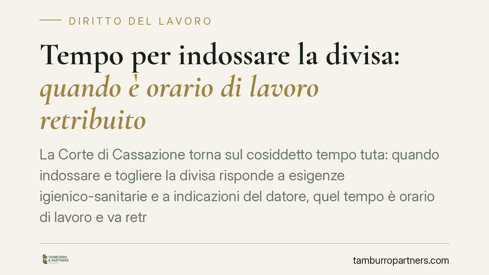

Tempo per indossare la divisa: quando è orario di lavoro retribuito
La Corte di Cassazione torna sul cosiddetto tempo tuta: quando indossare e togliere la divisa risponde a esigenze igienico-sanitarie e a indicazioni del datore, quel tempo è orario di lavoro e va retribuito. La stessa logica dell'eterodirezione estende il principio alla formazione obbligatoria in materia di sicurezza. Ne derivano riflessi retributivi e contributivi che meritano attenzione da entrambe le parti del rapporto.

Il caso
Una casa di cura privata si è vista contestare da INPS e INAIL il mancato computo, nell'orario di lavoro, del tempo impiegato dal personale sanitario (infermieri, OSS, ausiliari, fisioterapisti) per indossare e dismettere la divisa. La questione non è marginale: se quei minuti sono orario di lavoro, sono retribuiti e assoggettati a contribuzione.
Secondo la Corte di Cassazione, Sezione Lavoro, il criterio dirimente non è dove ci si cambia, ma se l'operazione sia eterodiretta, cioè imposta dal datore, anche in forma implicita.
> Nota: gli estremi dell'ordinanza (indicata nella fonte come n. 13040/2026) sono da verificare. L'anno riportato appare cronologicamente incoerente; prima di ogni utilizzo si raccomanda il riscontro sulla banca dati ufficiale.
Inquadramento normativo
L'art. 1, comma 2, lett. a) del D.Lgs. 66/2003 definisce orario di lavoro "qualsiasi periodo in cui il lavoratore sia al lavoro, a disposizione del datore di lavoro e nell'esercizio della sua attività o delle sue funzioni". La norma attua la Direttiva 2003/88/CE, che àncora la nozione a un dato sostanziale: la soggezione del lavoratore al potere direttivo, non la sua produttività immediata.
Da qui il ragionamento della Corte. Quando la divisa sanitaria risponde a precise esigenze igienico-sanitarie e la sua natura impone tempi e modalità di vestizione, il lavoratore non è libero di gestire quei momenti: è soggetto a un'indicazione datoriale, ancorché non scritta. L'eterodirezione, pur implicita, integra la condizione dell'"essere a disposizione". Il tempo diventa quindi orario di lavoro, con conseguente diritto alla retribuzione e correlato obbligo contributivo.
La medesima ratio dell'eterodirezione riguarda la formazione obbligatoria in materia di salute e sicurezza. L'art. 37 del D.Lgs. 81/2008 pone la formazione a carico del datore e la configura come attività imposta e finalizzata all'interesse aziendale: proprio perché il lavoratore vi partecipa in posizione di soggezione, e non per scelta autonoma, anche quel tempo rientra nell'orario di lavoro. Non si tratta quindi di una "regola gemella", ma della stessa logica applicata a fattispecie diversa.
Implicazioni pratiche
Per il datore di lavoro il principio comporta un possibile ampliamento della base di calcolo retributiva e contributiva, con rischio di contestazioni da parte degli enti previdenziali e di richieste di differenze da parte dei dipendenti.
Per il lavoratore, al contrario, si apre la possibilità di rivendicare come lavoro effettivo tempi finora considerati preparatori.
Occorre però evitare automatismi. La valutazione resta casistica: va accertato, volta per volta, se la vestizione sia realmente imposta dalla natura degli indumenti e dai protocolli, oppure lasciata alla libera organizzazione del dipendente. In assenza di eterodirezione, il tempo tuta non è necessariamente retribuibile.
Il principio, inoltre, è potenzialmente estensibile ad altri comparti: settore alimentare, chimico, farmaceutico, e più in generale ogni contesto in cui l'uso di indumenti dedicati o di dispositivi di protezione individuale (DPI) risponda a obblighi di legge o a esigenze igienico-sanitarie non derogabili dal lavoratore.
Cosa fare in concreto
- Verifica i protocolli aziendali: individua se esistono disposizioni, anche interne o consuetudinarie, che impongono modalità e luoghi di vestizione.
- Documenta i tempi: rileva e registra i minuti effettivamente dedicati a indossare e dismettere divisa o DPI, con evidenze oggettive.
- Esamina il CCNL applicabile: alcuni contratti collettivi disciplinano già il tempo tuta o prevedono indennità dedicate, incidendo sulla concreta esigibilità delle somme.
- Distingui le fattispecie: separa vestizione eterodiretta, formazione obbligatoria e attività realmente libere, evitando di trattarle in modo indistinto.
- Considera la prescrizione: le differenze retributive sono soggette a termini di prescrizione; è opportuno valutare tempestivamente la posizione per non perdere i periodi ancora esigibili.
---
Contributo informativo a cura di Tamburro & Partners Avvocati - Avv. Giuseppe Tamburro. Non costituisce parere legale.
Ogni storia di lavoro ha i suoi tempi.
Se gestisci HR e vuoi un confronto su contenzioso, ispezioni o licenziamenti, scrivi allo studio. Ti rispondiamo entro un giorno lavorativo.